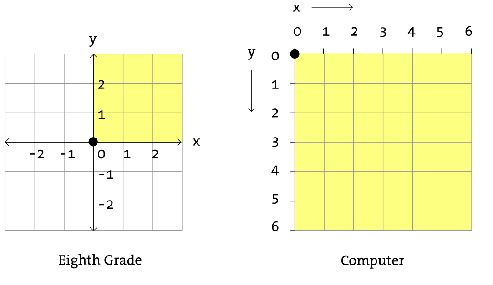
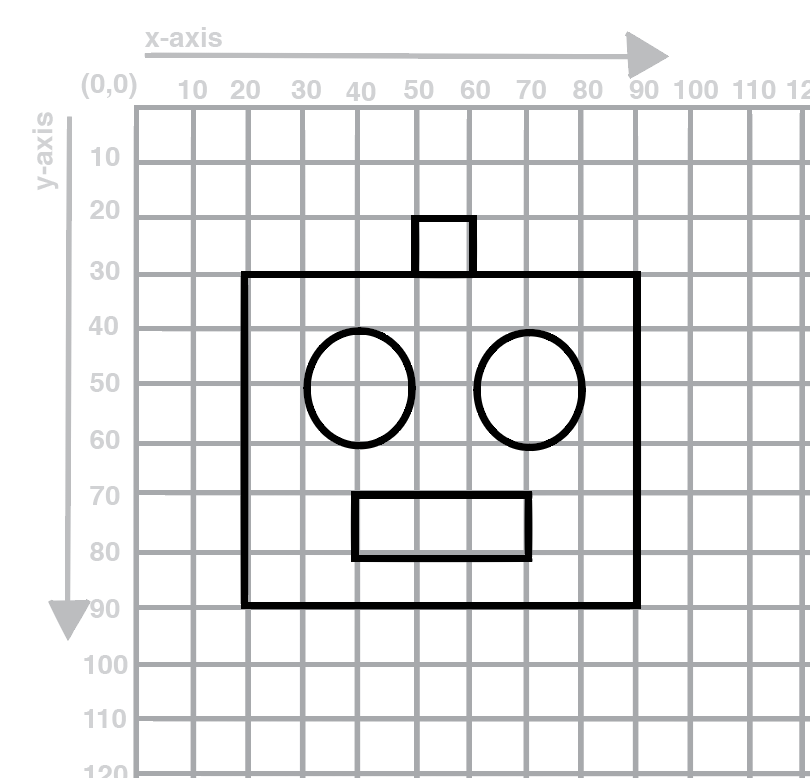

In this learning activity students will create a visual composition using the p5 shape-drawing functions (ellipse, rect, line, point, quad, triangle), and set their fill and stroke to a grayscale value.
They will understand the p5 canvas coordinate system, call functions and pass parameters to them, and consult the p5 reference for documentation about them.
Students will be able to:
- Create an account on the editor
- Explain what p5.js is
- Describe things you can create on p5.js
- Understand the p5 canvas coordinate system
In this course we are going to make projects using p5.js. Before we explain what is p5.js, watch this video and see for yourself what kind of projects you can make it with it!
p5.js (or simply p5) is a JavaScript library for creating visual and interactive art in web browsers. p5.js works with the three native web languages (JavaScript, HTML, and CSS) to make work that is easily shareable on the Internet.This programming language will be used in this course to introduce basic programming concepts and apply them to create computational media by building expressive and interactive computer applications and media.
Unplugged Activity: Draw a Robot and Write Pseudocode
Before we start to give instructions to computers, we are going to practice by writing instructions on paper. You will use a graph that has the p5.js coordinate system to draw out a design, and write down instructions on how another person could draw them.
p5.js (or simply p5) is a JavaScript library for creating visual and interactive art in web browsers. p5.js works with the three native web languages (JavaScript, HTML, and CSS) to make work that is easily shareable on the Internet.This programming language will be used in this course to introduce basic programming concepts and apply them to create computational media by building expressive and interactive computer applications and media.
In p5, we use code to draw graphics on a “canvas”. The canvas displays the output of your code.

In a computer screen every pixel is a coordinate. It has an “x” value (horizontal) and a “y” value (vertical) that determines where the pixel is going to be located. But computers use a different coordinate system than the one you’re used to: the origin is located in the top left and the x value increases to the right while the y-value increases down vertically.

Source: https://processing.org/tutorials/drawing/
Example:

Use the following information to draw the robot on your worksheet.
Step 2: Deconstruct Your Drawing
On the second page of the worksheet, list each shape used in your drawing. In the instructions section, provide the information for each shape as if you were instructing someone to draw your robot.
You will need to specify the shape, the x and y coordinate, and the width and height of the shape (where applicable). Keep in mind that the x and y coordinate of a rectangle refer to one of it’s corners, while for an ellipse they refer to it’s center.
Also keep in mind the p5 coordinate system with the origin in the upper left corner.